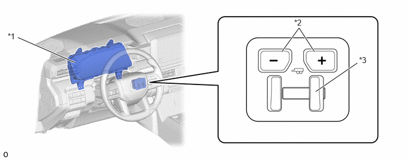

- Sends the vehicle speed, master cylinder pressure, stop light switch operation condition, vehicle longitudinal and lateral deceleration value, ABS operation condition, VSC operation condition, hill-start assist control operation condition, trailer sway control operation condition and parking brake operation condition when driving to the trailer brake control ECU.
- Sends pre-collision system and dynamic radar cruise control system cooperative brake request signals to the trailer brake control ECU.
| Last Modified: 10-07-2025 | 6.11:8.1.0 | Doc ID: RM100000002K4UP |
| Model Year Start: 2024 | Model: Tacoma | Prod Date Range: [03/2024 - ] |
| Title: BRAKE CONTROL / DYNAMIC CONTROL SYSTEMS: TRAILER BRAKE CONTROL SYSTEM: BRAKE CONTROL; 2024 - 2026 MY Tacoma Tacoma HV [03/2024 - ] | ||
BRAKE CONTROL
FUNCTION OF MAIN COMPONENTS
|
Component |
Function |
|
|---|---|---|
|
*1: Gasoline Models
*2: HEV Models |
||
|
Trailer Brake Control ECU (Brake Control with Bracket Relay) |
Calculates the optimal amount of trailer brake control according to certain information (such as the output from each sensor and ECU and the gain and trailer brake type set by the driver) and outputs an electrical signal. |
|
|
Trailer Brake Control Switch |
GAIN (+/-) Select Switch |
Selects the amount of braking force for the trailer brake. |
|
Trailer Brake Output Slider |
Operates the trailer brake only via manual operation. |
|
|
Brake Actuator Assembly |
Skid Control ECU*1 |
|
|
No.2 Skid Control ECU*2 |
||
|
Combination Meter Assembly |
Multi-information Display |
|
|
Trailer Brake Warning Light |
Illuminates to alert the driver when the trailer brake control ECU detects a malfunction. |
|
|
Buzzer |
Sounds together with a message display on the multi-information display during a system malfunction. |
|
|
Airbag ECU Assembly |
Deceleration Sensor |
Detects the vehicle's longitudinal and lateral deceleration. |
|
Millimeter Wave Rader Sensor Assembly |
Outputs brake signals for the pre-collision system. |
|
|
ECM |
Outputs brake operation signals for the dynamic radar cruise control system. |
|
SYSTEM CONTROL
(a) Automatic Control
(1) Automatic control is a system that determines the vehicle condition and performs optimal braking on the trailer side. The trailer brake control ECU calculates the optimal amount of trailer brake control according to certain information (such as the output from each sensor and ECU and the gain and trailer brake type set by the driver) and outputs an electrical signal (maximum output: 24 A).
|
Function |
Outline |
|---|---|
|
*1: Gasoline Models
*2: HEV Models |
|
|
Driver Brake Cooperative Brake |
Controls trailer brake in response to the driver's braking operation when a brake pedal operation signal from the master cylinder pressure sensor is detected. |
|
ABS Cooperative Brake |
Controls trailer brake proportional to the deceleration speed by linking with the ABS on the vehicle side when the trailer brake control ECU detects an ABS operation by the skid control ECU*1 or No.2 skid control ECU*2. |
|
Hill-start Assist Control Cooperative Brake |
Controls trailer brake by linking with hill-start assist control on the vehicle side when the trailer brake control ECU detects a hill-start assist control operation by the skid control ECU*1 or No.2 skid control ECU*2. |
|
Trailer Sway Control Cooperative Brake |
Controls trailer brake by linking with the trailer sway control on the vehicle side when the trailer brake control ECU detects a trailer sway control operation by the skid control ECU*1 or No.2 skid control ECU*2. |
|
Pre-collision System Cooperative Brake |
Controls trailer brake proportionate to the amount of deceleration by linking with the pre-collision system on the vehicle side when the trailer brake control ECU receives pre-collision system cooperative brake request signals from the millimeter wave radar sensor assembly. |
|
Dynamic Radar Cruise Control System Cooperative Brake |
Controls trailer brake proportionate to the amount of deceleration by linking with the dynamic radar cruise control system on the vehicle side when the trailer brake control ECU receives dynamic radar cruise control system cooperative brake request signals from the ECM. |
|
VSC Cooperative Brake |
Controls trailer brake proportional to the deceleration speed by linking with the VSC on the vehicle side when the trailer brake control ECU detects an VSC operation by the skid control ECU*1 or No.2 skid control ECU*2. |
|
Electronic Parking Brake Cooperative Brake (When Driving) |
Controls trailer brake proportional to the deceleration speed by linking with the brake control on the vehicle side when a parking brake operation when driving is detected by the skid control ECU*1 or No.2 skid control ECU*2. |
(b) Manual Control
(1) Manual control operates only the trailer brake according to the trailer brake output slider operation from the driver.
(2) When the trailer brake control ECU detects that the trailer brake output slider is operated by the driver, the ECU outputs the amount of trailer brake control as an electrical signal according to the trailer brake output slider position (maximum output 24 A).
(3) When the driver operates the brake pedal (automatic control operates) during manual control operation, the amount of manual control is compared with the amount of automatic control, and the larger amount of trailer brake control is output.
FUNCTION
(a) GAIN (+/-) Select Switch
(1) The gain (+/-) select switch sets the amount of trailer brake control output from the trailer brake control ECU.
(2) The amount of trailer brake control can be set from 0 (no trailer braking) to 10 (maximum output) in 0.5 step increments.
(3) The set gain is displayed on the multi-information display in the combination meter assembly.
|
*1 |
Combination Meter Assembly
|
*2 |
Gain (+/-) Select Switch |
|
*3 |
Trailer Brake Output Slider |
- |
- |
(b) Trailer Brake Type Select
(1) The type of the trailer brake can be selected by operating the multi-information display in the combination meter assembly. The type of trailer brake selected can also be saved for each trailer name.
(2) 4 types of trailer brakes are available:
- Electric (0-4999lb)
- Electric (5000+ lb)
- Electric-over-Hydraulic (0-4999lb)
- Electric-over-Hydraulic (5000+ lb)
DIAGNOSIS
(a) If the trailer brake control ECU detects a malfunction in the trailer brake control system, warning message displays on the multi-information display. At the same time, a Diagnostic Trouble Code (DTC) is stored in the trailer brake control ECU. For details of DTC, refer to the Repair Manual.